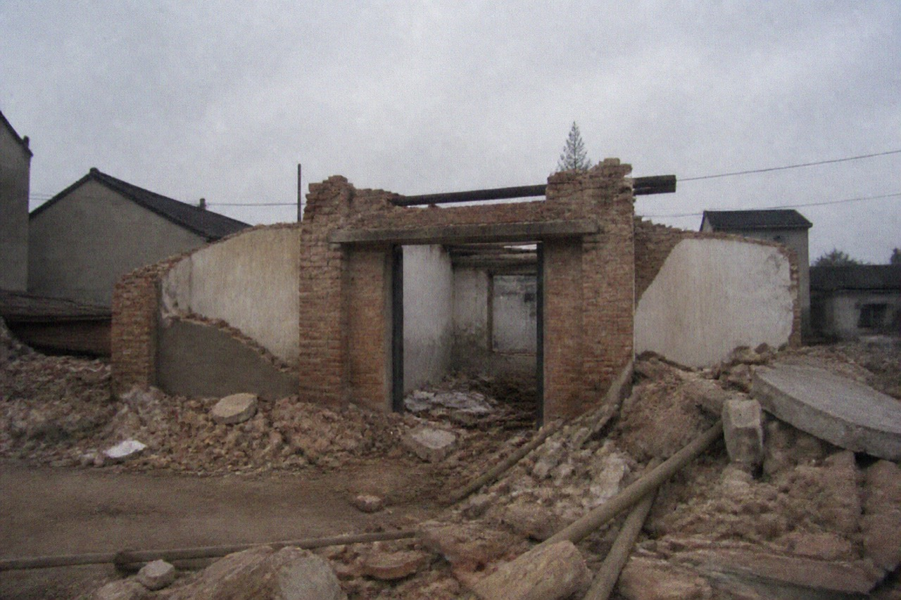

Reposted from local records. Original on file.

12 QiaotouLane was demolished April 2019. Former resident Zhang Xiu has moved. Site does not receive identifications.
This sheet only records the house. Whether people left, only the MoveOut register writes clearly.
Qiaotou local records